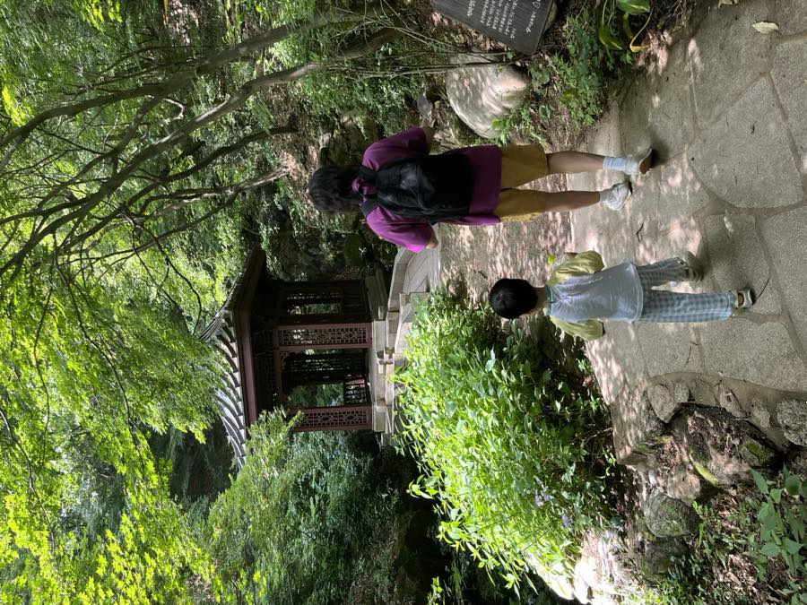
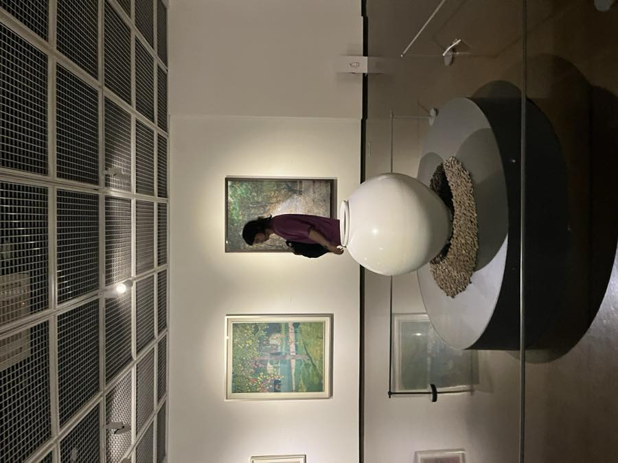

Korea, Nearby
Korean life,
a little closer.
Living in the UK with my children, I’ve come to realise that Korea is right here, in the life we share.
A little more about this space
Korea is deeply rooted in who I am, and I love sharing it with friends and neighbours. From food to everyday culture, this is where I bring those stories together and share a little of Korea with you.
Discover Korea
Life in Korea. Korean life in the UK.
Through my eyes · Jongno, Seoul · 서울, 종로구

© Yewon ParkA little green,
in the heart of the city.
The places, moments and everyday details that bring Korea a little closer.
© Yewon Park
The city, a little further away.

© Yewon ParkRoom to look a little longer.
A little Korea,
closer to home.
Eat, learn and explore.
Starting with places across England.
Use your location to see the closest restaurants first.
ENGLAND
Choose a city to explore its places. Numbers show places in this selection.
Approximate city groups · geoBoundaries / Eurostat, CC BY 4.0
A selection of 86 places across England. Restaurants, shops and cultural venues: Google 4.0+. Korean schools are included without ratings. Checked 12 November 2026.
Magazine
Food, ingredients & the everyday table.
1 / 3
One story. A few pages. A little of Korea.
Find your nearby.
Korean places & online discoveries in the UK.
A growing selection, with sources to explore. Check current details with each provider before visiting or booking.